Livia Barros - Desenvolvimento Pessoal
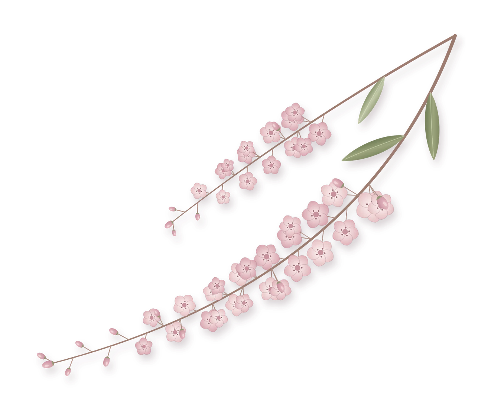
Todos queremos
prosperidade, expansão, crescimento.
Em diversos (ou todos) aspectos da nossa vida: casamento, trabalho, dinheiro...
Mas até a ciência já nos disse que a alegria precede a prosperidade.
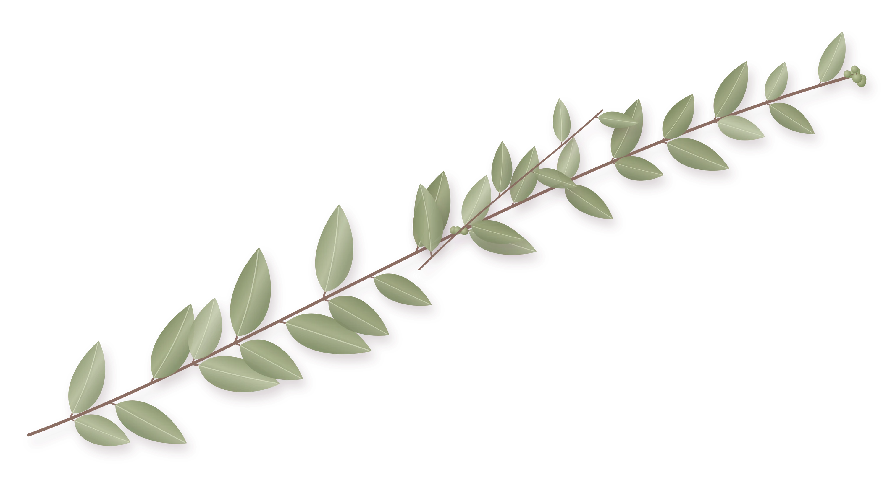
É preciso ser guiada numa travessia um pouco mais profunda para que você encontre a sua versão capaz de viver essa expansão.
E é pra isso que eu quero te convidar!
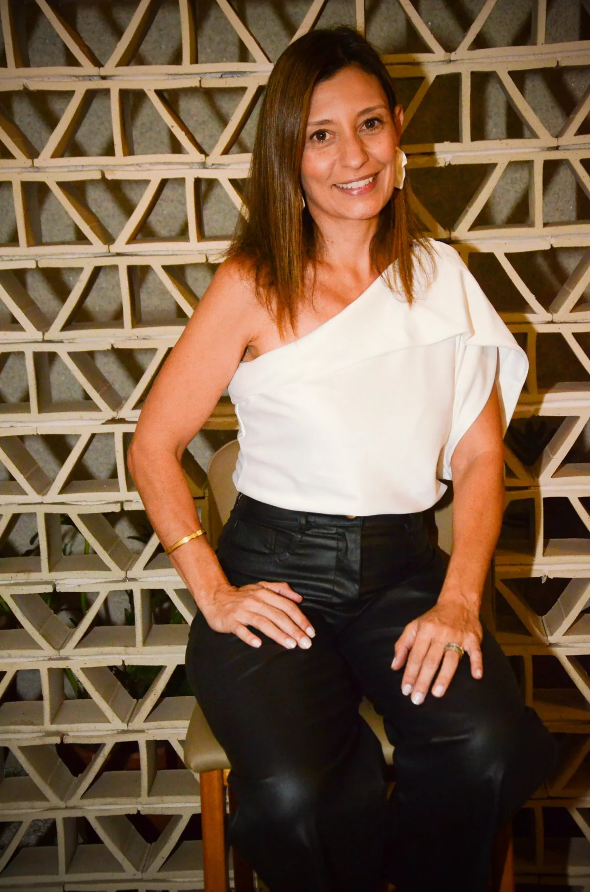
Uma imersão para viver uma jornada de transformação, de dentro pra fora.
Um tempo e um lugar preparados cuidadosamente pra você desacelerar, sair do automático, mapear crenças e comportamentos, e fortalecer recursos internos que sustentem uma vida bem vivida.
Estou te convidando pra fazer parte do retiro
“O Encontro”.
O que é
“O Encontro”?
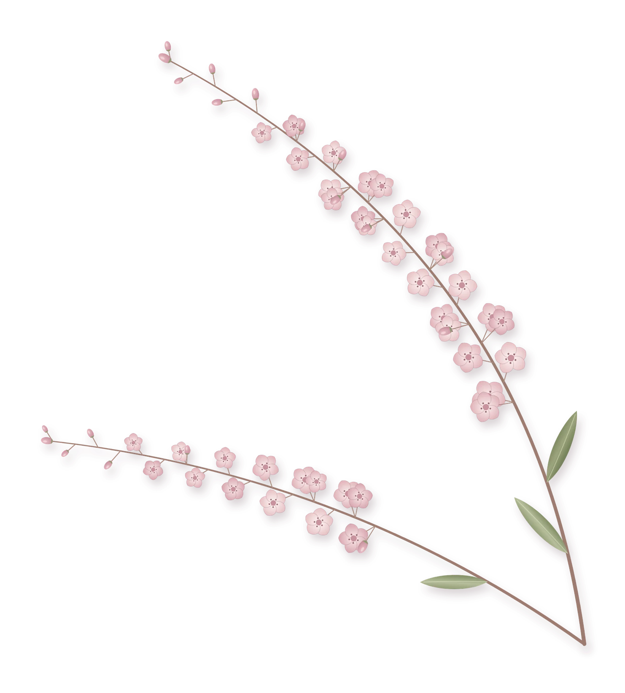
O Encontro é uma imersão de dois dias, preparada cuidadosamente para trazer consciência, clareza e mudança em padrões comportamentais, através de ferramentas, dinâmicas e práticas que te conduzam a um (re)encontro consigo mesma e sua criança interior.
Mais do que adquirir conhecimento, a proposta é viver uma jornada de transformação, de dentro para fora.
Para quem é “O Encontro”?
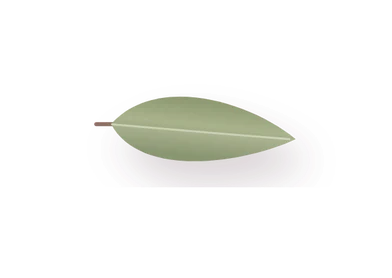
i.trabalham, se esforçam, se dedicam, mas não alcançam os resultados que desejam;
- ii.
têm dificuldade em dizer não e impor seus limites e vontades;
- iii.
buscam relacionamentos familiares mais harmônicos;
- iv.
travam pelo medo do julgamento externo;
- v.
querem desacelerar e viver com mais presença e leveza.
Você vai viver
- 01Manhã do sábado
O encontro com a sua biografia.
Um momento para entendermos quem somos a partir do que fomos ensinados a ser.
- 02Tarde do sábado
O encontro com a sua bagagem.
O que você carrega? Quantas de você, e quanto de tantos outros tem aí dentro?
- 03Manhã do domingo
O encontro com a sua consciência.
A partir daqui a clareza vai te guiar em cada escolha, para ter a vida que você deseja viver.
- 04Tarde do domingo
O encontro com a sua nova realidade.
Paz, clareza, coragem e o desenho do caminho para viver a realização e a prosperidade.
A experiência
Dois dias inteiros pra essa jornada, num cenário perfeito pra viver essa imersão.
Dia 1
- Check InWelcome Coffee
- Início das Atividades
- Almoço
- Retorno das Atividades
- Coffee
- Ciclo Final do Primeiro Dia
Dia 2
- Check In
- Início da AtividadeYin Yoga + Sound Healing
- Almoço
- Retorno das Atividades
- Coffee
- Encerramento
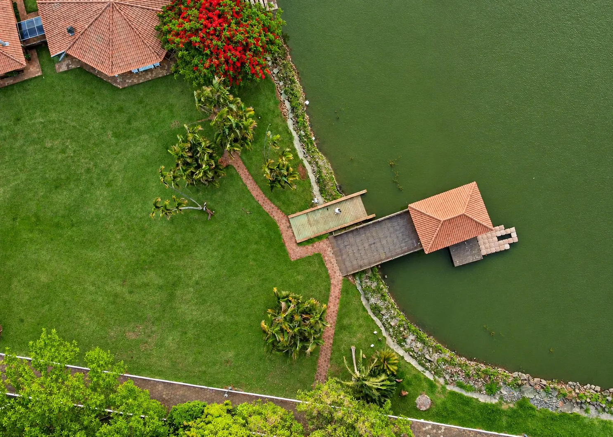
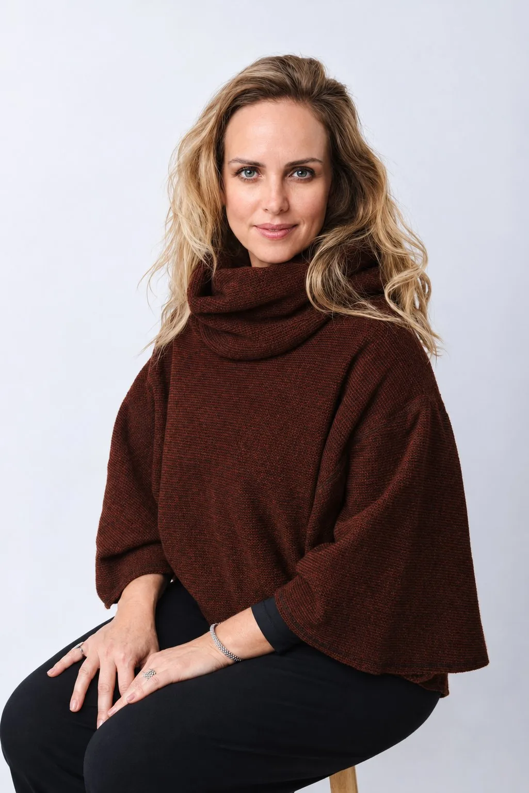
Yin Yoga e
Sound Healing
Criadora da marca YogaYinMe, que engloba as práticas de YinYoga, Mystical Mudras (meditação ativa) e SoundHealing, leva o estado de presença para as pessoas através da conexão interior.
Acalmar, Aquietar - para, com leveza, Transformar, é a proposta.
Experiente na condução de workshops - também no mundo corporativo, retiros nacionais e internacionais, aulas on-line e atendimentos personalizados para todos que desejam acessar esse aquietamento, para através dele reencontrar sua essência.
Prática Inédita
e Exclusiva
Uma experiência única, num ambiente especialmente preparado para você viver uma prática curativa e transformadora, que tem como benefícios:
- redução da ansiedade
- alívio de tensões físicas e dores
- foco e clareza mental
- equilíbrio físico, emocional e mental
- autoconhecimento
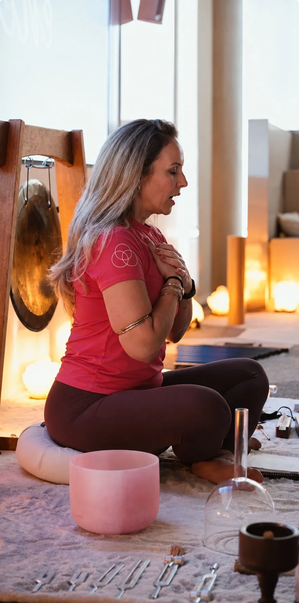
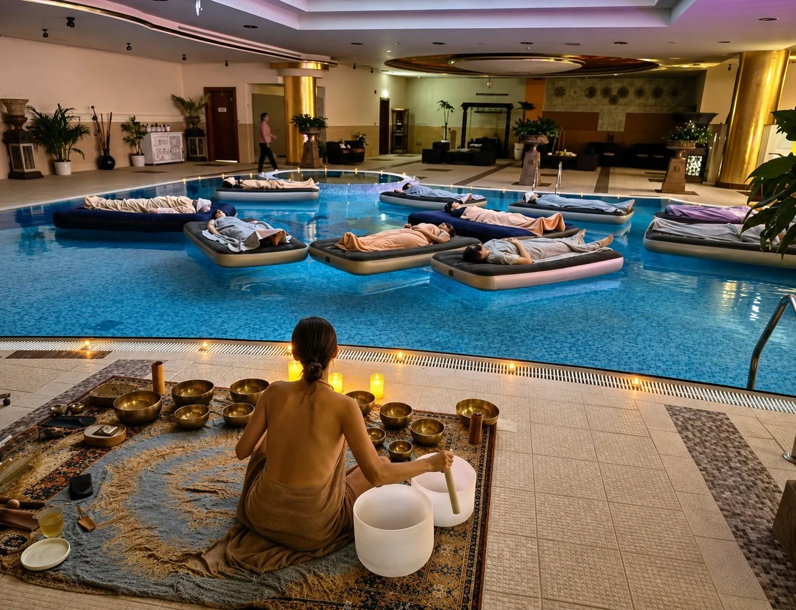
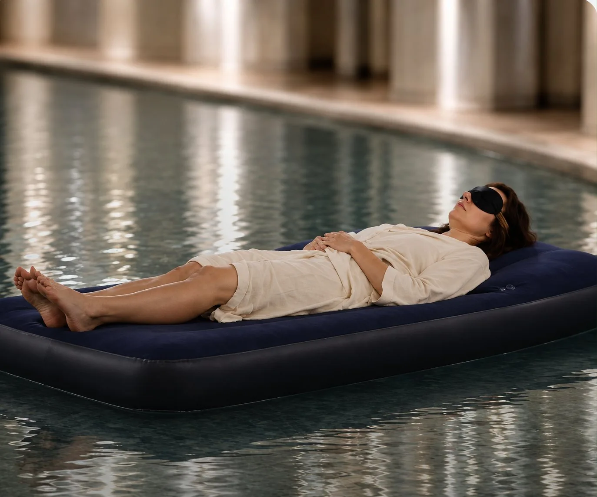
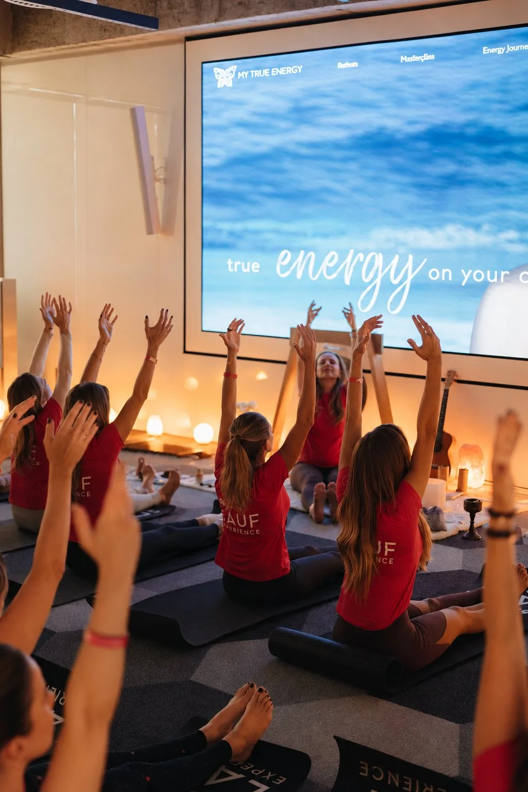
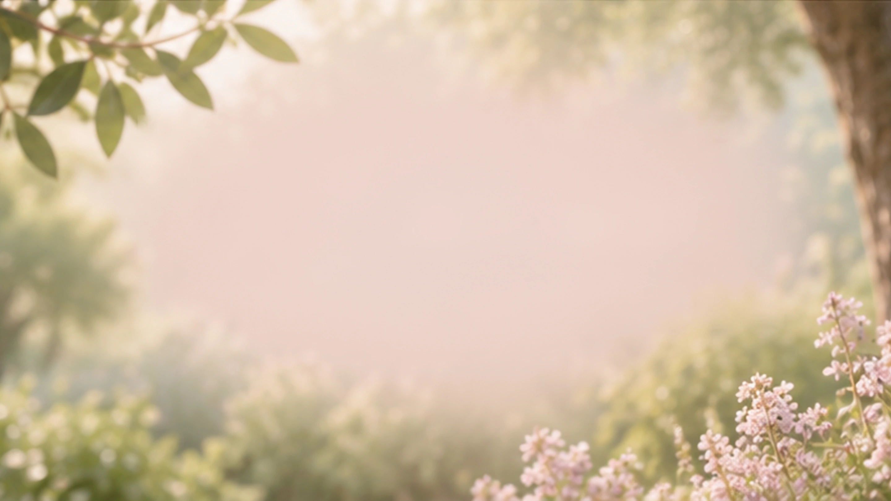